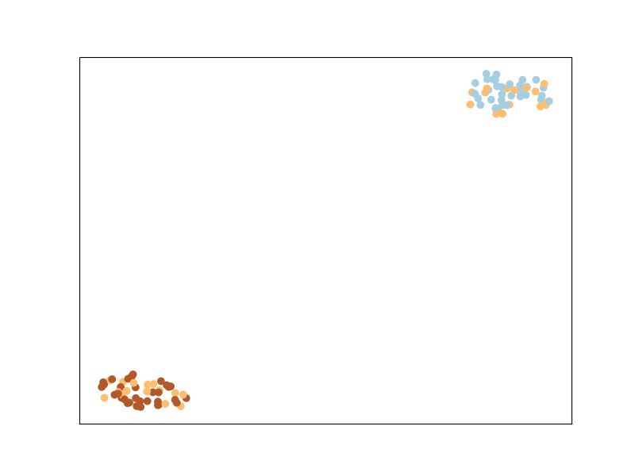
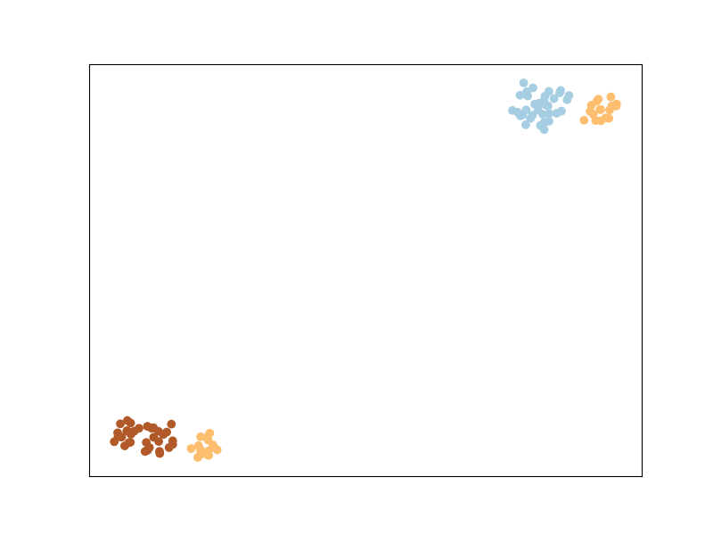
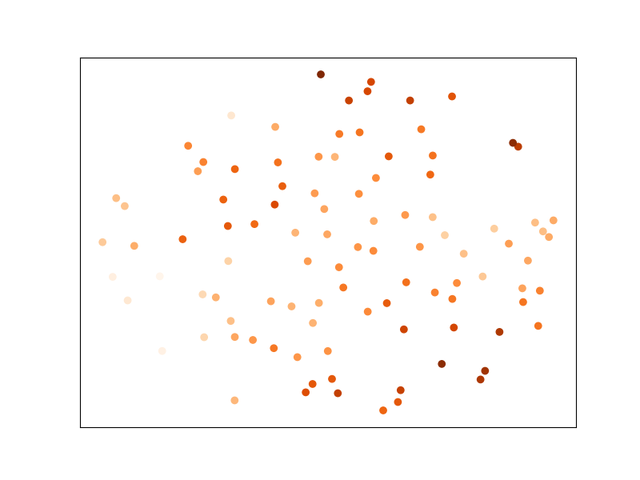

Note
Click here to download the full example code
Algorithms walkthrough¶
This is a small walkthrough which illustrates most of the Metric Learning algorithms implemented in metric-learn by using them on synthetic data, with some visualizations to provide intuitions into what they are designed to achieve.
# License: BSD 3 clause
# Authors: Bhargav Srinivasa Desikan <bhargavvader@gmail.com>
# William de Vazelhes <wdevazelhes@gmail.com>
Imports¶
from sklearn.manifold import TSNE
import metric_learn
import numpy as np
from sklearn.datasets import make_classification, make_regression
# visualisation imports
import matplotlib.pyplot as plt
np.random.seed(42)
Loading our dataset and setting up plotting¶
We will be using a synthetic dataset to illustrate the plotting,
using the function sklearn.datasets.make_classification from
scikit-learn. The dataset will contain:
- 100 points in 3 classes with 2 clusters per class
- 5 features, among which 3 are informative (correlated with the class labels) and two are random noise with large magnitude
Note that the dimensionality of the data is 5, so to plot the
transformed data in 2D, we will use the t-sne algorithm. (See
sklearn.manifold.TSNE).
Let’s now plot the dataset as is.
We can see that the classes appear mixed up: this is because t-sne is based on preserving the original neighborhood of points in the embedding space, but this original neighborhood is based on the euclidean distance in the input space, in which the contribution of the noisy features is high. So even if points from the same class are close to each other in some subspace of the input space, this is not the case when considering all dimensions of the input space.
Metric Learning¶
Why is Metric Learning useful? We can, with prior knowledge of which points are supposed to be closer, figure out a better way to compute distances between points for the task at hand. Especially in higher dimensions when Euclidean distances are a poor way to measure distance, this becomes very useful.
Basically, we learn this distance: \(D(x, x') = \sqrt{(x-x')^\top M(x-x')}\). And we learn the parameters \(M\) of this distance to satisfy certain constraints on the distance between points, for example requiring that points of the same class are close together and points of different class are far away.
For more information, check the What is Metric Learning? section from the documentation. Some good reading material can also be found here. It serves as a good literature review of Metric Learning.
We will briefly explain the metric learning algorithms implemented by metric-learn, before providing some examples for its usage, and also discuss how to perform metric learning with weaker supervision than class labels.
Metric-learn can be easily integrated with your other machine learning pipelines, and follows scikit-learn conventions.
Large Margin Nearest Neighbour¶
LMNN is a metric learning algorithm primarily designed for k-nearest neighbor classification. The algorithm is based on semidefinite programming, a sub-class of convex programming (as most Metric Learning algorithms are).
The main intuition behind LMNN is to learn a pseudometric under which all data instances in the training set are surrounded by at least k instances that share the same class label. If this is achieved, the leave-one-out error (a special case of cross validation) is minimized. You’ll notice that the points from the same labels are closer together, but they are not necessary in a same cluster. This is particular to LMNN and we’ll see that some other algorithms implicitly enforce points from the same class to cluster together.
- See more in the User Guide
- See more in the documentation of the class
LMNN
Fit and then transform!¶
So what have we learned? The matrix \(M\) we talked about before.
Now let us plot the transformed space - this tells us what the original space looks like after being transformed with the new learned metric.
Pretty neat, huh?
The rest of this notebook will briefly explain the other Metric Learning
algorithms before plotting them. Also, while we have first run fit
and then transform to see our data transformed, we can also use
fit_transform. The rest of the examples and illustrations will use
fit_transform.
Information Theoretic Metric Learning¶
ITML uses a regularizer that automatically enforces a Semi-Definite Positive Matrix condition - the LogDet divergence. It uses soft must-link or cannot-link constraints, and a simple algorithm based on Bregman projections. Unlike LMNN, ITML will implicitly enforce points from the same class to belong to the same cluster, as you can see below.
- See more in the User Guide
- See more in the documentation of the class
ITML
Out:
/home/william/metric-learn/metric_learn/itml.py:35: FutureWarning: arrays to stack must be passed as a "sequence" type such as list or tuple. Support for non-sequence iterables such as generators is deprecated as of NumPy 1.16 and will raise an error in the future.
X = np.vstack({tuple(row) for row in pairs.reshape(-1, pairs.shape[2])})
Mahalanobis Metric for Clustering¶
MMC is an algorithm that will try to minimize the distance between similar points, while ensuring that the sum of distances between dissimilar points is higher than a threshold. This is done by optimizing a cost function subject to an inequality constraint.
- See more in the User Guide
- See more in the documentation of the class
MMC
Sparse Determinant Metric Learning¶
Implements an efficient sparse metric learning algorithm in high dimensional space via an \(l_1\)-penalized log-determinant regularization. Compared to the most existing distance metric learning algorithms, the algorithm exploits the sparsity nature underlying the intrinsic high dimensional feature space.
- See more in the User Guide
- See more in the documentation of the class
SDML
Out:
/home/william/metric-learn/metric_learn/_util.py:707: FutureWarning: arrays to stack must be passed as a "sequence" type such as list or tuple. Support for non-sequence iterables such as generators is deprecated as of NumPy 1.16 and will raise an error in the future.
X = np.vstack({tuple(row) for row in input.reshape(-1, n_features)})
Least Squares Metric Learning¶
LSML is a simple, yet effective, algorithm that learns a Mahalanobis metric from a given set of relative comparisons. This is done by formulating and minimizing a convex loss function that corresponds to the sum of squared hinge loss of violated constraints.
- See more in the User Guide
- See more in the documentation of the class
LSML
Out:
/home/william/metric-learn/metric_learn/_util.py:707: FutureWarning: arrays to stack must be passed as a "sequence" type such as list or tuple. Support for non-sequence iterables such as generators is deprecated as of NumPy 1.16 and will raise an error in the future.
X = np.vstack({tuple(row) for row in input.reshape(-1, n_features)})
Neighborhood Components Analysis¶
NCA is an extremly popular metric learning algorithm.
Neighborhood components analysis aims at “learning” a distance metric
by finding a linear transformation of input data such that the average
leave-one-out (LOO) classification performance of a soft-nearest
neighbors rule is maximized in the transformed space. The key insight to
the algorithm is that a matrix \(A\) corresponding to the
transformation can be found by defining a differentiable objective function
for \(A\), followed by use of an iterative solver such as
scipy.optimize.fmin_l_bfgs_b. Like LMNN, this algorithm does not try to
cluster points from the same class in a unique cluster, because it
enforces conditions at a local neighborhood scale.
- See more in the User Guide
- See more in the documentation of the class
NCA
Local Fisher Discriminant Analysis¶
LFDA is a linear supervised dimensionality reduction method. It is particularly useful when dealing with multimodality, where one ore more classes consist of separate clusters in input space. The core optimization problem of LFDA is solved as a generalized eigenvalue problem. Like LMNN, and NCA, this algorithm does not try to cluster points from the same class in a unique cluster.
- See more in the User Guide
- See more in the documentation of the class
LFDA
Relative Components Analysis¶
RCA is another one of the older algorithms. It learns a full rank Mahalanobis distance metric based on a weighted sum of in-class covariance matrices. It applies a global linear transformation to assign large weights to relevant dimensions and low weights to irrelevant dimensions. Those relevant dimensions are estimated using “chunklets”, subsets of points that are known to belong to the same class.
- See more in the User Guide
- See more in the documentation of the class
RCA
Regression example: Metric Learning for Kernel Regression¶
The previous algorithms took as input a dataset with class labels. Metric learning can also be useful for regression, when the labels are real numbers. An algorithm very similar to NCA but for regression is Metric Learning for Kernel Regression (MLKR). It will optimize for the average leave-one-out regression performance from a soft-nearest neighbors regression.
- See more in the User Guide
- See more in the documentation of the class
MLKR
To illustrate MLKR, let’s use the dataset
sklearn.datasets.make_regression the same way as we did with the
classification before. The dataset will contain: 100 points of 5 features
each, among which 3 are informative (i.e., used to generate the
regression target from a linear model), and two are random noise with the
same magnitude.
Let’s plot the dataset as is
And let’s plot the dataset after transformation by MLKR:
Points that have the same value to regress are now closer to each
other ! This would improve the performance of
sklearn.neighbors.KNeighborsRegressor for instance.
Metric Learning from Weaker Supervision¶
To learn the metric, so far we have always given the labels of the
data to supervise the algorithms. However, in many applications,
it is easier to obtain information about whether two samples are
similar or dissimilar. For instance, when annotating a dataset of face
images, it is easier for an annotator to tell if two faces belong to the same
person or not, rather than finding the ID of the face among a huge database
of every person’s faces.
Note that for some problems (e.g., in information
retrieval where the goal is to rank documents by similarity to a query
document), there is no notion of individual label but one can gather
information on which pairs of points are similar or dissimilar.
Fortunately, one of the strength of metric learning is the ability to
learn from such weaker supervision. Indeed, some of the algorithms we’ve
used above have alternate ways to pass some supervision about the metric
we want to learn. The way to go is to pass a 2D array pairs of pairs,
as well as an array of labels pairs_labels such that for each i between
0 and n_pairs we want X[pairs[i, 0], :] and X[pairs[i, 1], :] to be
similar if pairs_labels[i] == 1, and we want them to be dissimilar if
pairs_labels[i] == -1. In other words, we
want to enforce a metric that projects similar points closer together and
dissimilar points further away from each other. This kind of input is
possible for ITML, SDML, and MMC. See Weakly Supervised Metric Learning for
details on other kinds of weak supervision that some algorithms can work
with.
For the purpose of this example, we’re going to explicitly create these
pairwise constraints through the labels we have, i.e. y.
Do keep in mind that we are doing this method because we know the labels
- we can actually create the constraints any way we want to depending on
the data!
Note that this is what metric-learn did under the hood in the previous
examples (do check out the
constraints module!) - but we’ll try our own version of this. We’re
going to go ahead and assume that two points labeled the same will be
closer than two points in different labels.
def create_constraints(labels):
import itertools
import random
# aggregate indices of same class
zeros = np.where(y == 0)[0]
ones = np.where(y == 1)[0]
twos = np.where(y == 2)[0]
# make permutations of all those points in the same class
zeros_ = list(itertools.combinations(zeros, 2))
ones_ = list(itertools.combinations(ones, 2))
twos_ = list(itertools.combinations(twos, 2))
# put them together!
sim = np.array(zeros_ + ones_ + twos_)
# similarily, put together indices in different classes
dis = []
for zero in zeros:
for one in ones:
dis.append((zero, one))
for two in twos:
dis.append((zero, two))
for one in ones:
for two in twos:
dis.append((one, two))
# pick up just enough dissimilar examples as we have similar examples
dis = np.array(random.sample(dis, len(sim)))
# return an array of pairs of indices of shape=(2*len(sim), 2), and the
# corresponding labels, array of shape=(2*len(sim))
# Each pair of similar points have a label of +1 and each pair of
# dissimilar points have a label of -1
return (np.vstack([np.column_stack([sim[:, 0], sim[:, 1]]),
np.column_stack([dis[:, 0], dis[:, 1]])]),
np.concatenate([np.ones(len(sim)), -np.ones(len(sim))]))
pairs, pairs_labels = create_constraints(y)
Now that we’ve created our constraints, let’s see what it looks like!
print(pairs)
print(pairs_labels)
Out:
[[ 0 6]
[ 0 9]
[ 0 10]
...
[39 21]
[86 89]
[91 15]]
[ 1. 1. 1. ... -1. -1. -1.]
Using our constraints, let’s now train ITML again. Note that we are no
longer calling the supervised class ITML_Supervised but the more generic
(weakly-supervised) ITML, which
takes the dataset X through the preprocessor argument (see
this section of the documentation to learn
about more advanced uses of preprocessor) and the pair information pairs
and pairs_labels in the fit method.

Out:
/home/william/metric-learn/metric_learn/itml.py:35: FutureWarning: arrays to stack must be passed as a "sequence" type such as list or tuple. Support for non-sequence iterables such as generators is deprecated as of NumPy 1.16 and will raise an error in the future.
X = np.vstack({tuple(row) for row in pairs.reshape(-1, pairs.shape[2])})
And that’s the result of ITML after being trained on our manually constructed constraints! A bit different from our old result, but not too different.
RCA and LSML also have their own specific ways of taking in inputs - it’s worth one’s while to poke around in the constraints.py file to see how exactly this is going on.
Finally, one of the main advantages of metric-learn is its out-of-the box
compatibility with scikit-learn, for doing model selection,
cross-validation, and scoring for instance. Indeed, supervised algorithms are
regular sklearn.base.TransformerMixin that can be plugged into any
pipeline or cross-validation procedure. And weakly-supervised estimators are
also compatible with scikit-learn, since their input dataset format described
above allows to be sliced along the first dimension when doing
cross-validations (see also this section). You
can also look at some use cases where you could combine
metric-learn with scikit-learn estimators.
This brings us to the end of this tutorial! Have fun Metric Learning :)
Total running time of the script: ( 3 minutes 15.600 seconds)